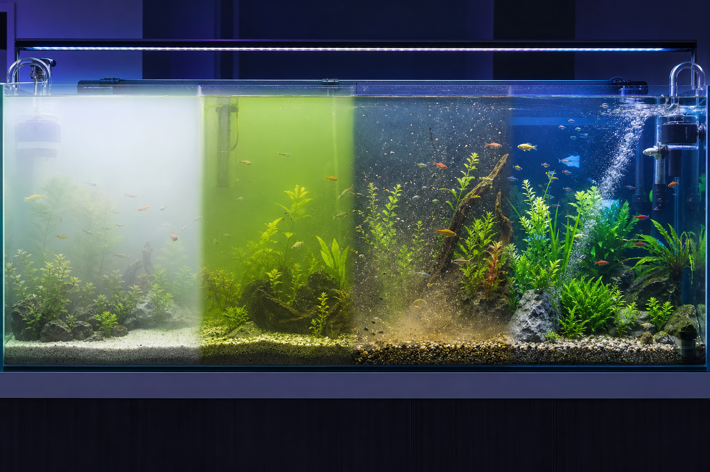
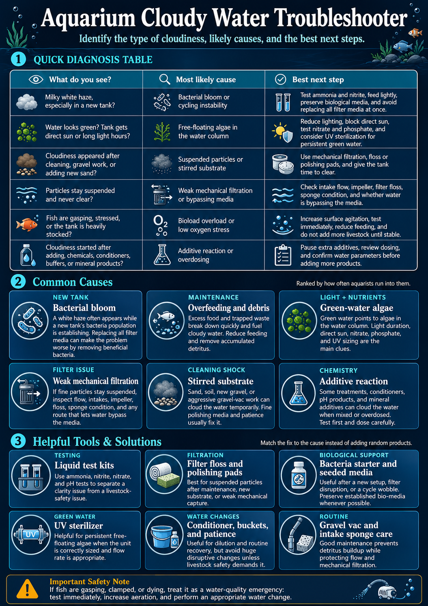

White haze
Often a new-tank bacterial bloom, over-cleaned filter, or sudden biological imbalance.
 The Hidden ReefAquariums · Fish · Coral · Ponds
The Hidden ReefAquariums · Fish · Coral · Ponds
Cloudy water is a symptom, not a single problem. Start with testing, identify the type of cloudiness, then choose a fix that protects the tank's biological filter.

Cloudy can mean several different things. The color, timing, and pattern give the first clue.
Often a new-tank bacterial bloom, over-cleaned filter, or sudden biological imbalance.
Usually free-floating algae fed by light, nutrients, direct sun, or old maintenance habits.
Often stirred substrate, fine debris, weak mechanical filtration, or dirty media.
Stable biology, proper flow, clean mechanical media, and consistent maintenance.
Don't add three products at once and hope one worked. Test first, make one controlled change, and give the filter time to catch up unless livestock are in danger.
These steps are useful across most cloudy-water cases.
Cloudiness plus ammonia or nitrite changes the priority. Protect fish first, then polish water later.
Look for clogged intakes, packed filter floss, weak impellers, low water level, or media installed in the wrong order.
Extra food, dead plant matter, and stirred debris feed the exact bloom you are trying to clear.
Use this flow to narrow the problem before adding products.
Ranked by how often these show up in home aquariums.
A white haze often appears while a new tank's bacteria population is adjusting. The mistake is replacing every filter pad and removing the bacteria the tank needs.
Extra food breaks down fast. Reduce feeding, remove trapped waste, and make sure mechanical media is catching particles.
Green water points to algae in the water column. Light duration, sunlight, nitrate, phosphate, and UV sizing are the useful conversation points.
If particles stay suspended, check flow, intakes, impellers, filter floss, sponge condition, and whether water is bypassing the media.
Sand, soil, new gravel, or aggressive gravel-vac work can cloud water temporarily. Filter floss and time usually beat chemical guessing.
Some treatments, conditioners, pH products, and mineral additives can cloud when mixed or overdosed. Stop adding products until the basics are tested.
Match the supplies to the diagnosis instead of grabbing a random bottle.
Ammonia, nitrite, nitrate, and pH tell whether this is a livestock-safety issue or a clarity issue.
Useful for fine particles after substrate disturbance, maintenance, or weak mechanical capture.
Helpful after new setups, filter disruption, or a cycle wobble. Preserve old biological media whenever possible.
A good tool for persistent green water when sized to flow rate. It supports maintenance; it does not replace it.
Small controlled water changes can reduce waste while keeping the tank stable.
Better waste removal and pre-filtering help prevent repeat cloudy-water cycles.
If fish are gasping, lying on the bottom, showing red gills, refusing food suddenly, or ammonia/nitrite tests positive, bring water test results and a clear phone photo/video to the store before adding treatments.
